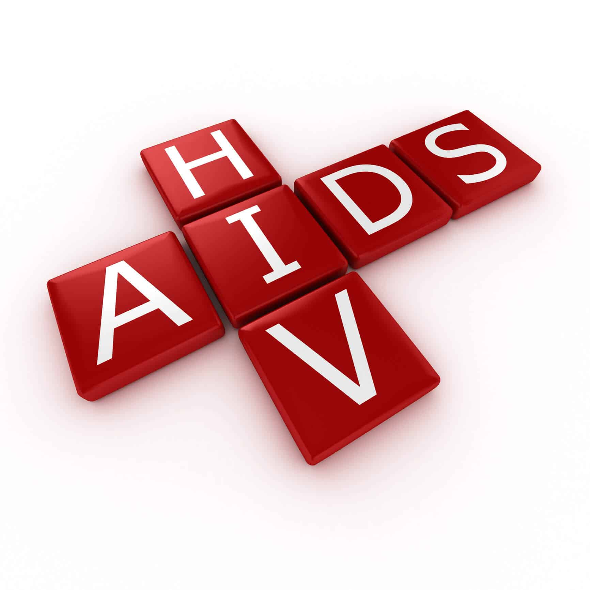
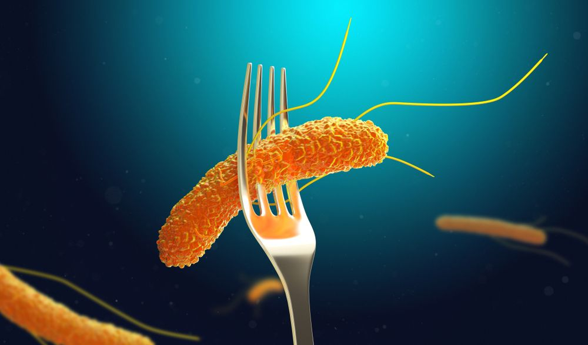

Rabiës (hondsdolheid)
Rabiës is een zoönose die ook wel hondsdolheid wordt genoemd. Deze zoönose soort wordt veroorzaakt door een virus. Deze zoönose komt nog af en toe wereldwijd voor en was net als de pest ook een van de grootste zoönose in onze geschiedenis. De geïnfecteerde honden, katten, vleermuizen, vossen, wolven, knaagdieren en/of apen brengen het virus over aan de mens door een beet, krab, lik of speeksel. Vaak vertoont een besmet dier geen verschijnselen terwijl ze het virus wat in het speeksel zit kunnen overdragen. (CDC, 2022). Wanneer iemand gebeten wordt door een besmet dier komt het virus vanuit het speeksel in de onderhuidse weefsel of spieren te liggen. Via de zenuwbanen vermenigvuldigt het virus zich en komt het rabiësvirus na circa vier dagen in het (centrale) zenuwstelsel. Hier tast het virus de hersenen ernstig aan. Als een dier besmet raakt zou de eerste gedragsverandering al een symptoom kunnen zijn. Honden en katten worden snel agressief of onrustig. Vossen worden minder schuw en vallen dus sneller mensen aan. (LICG, 2022). Andere symptomen bij dieren zijn: problemen met slikken, veel kwijlen of speeksel, bijten en verlamd zijn. (CDC, 2022). Mensen die hondsdolheid hebben krijgen ziekteverschijnselen, zoals kramp in de spieren, stuipen, verlamming, moeite met slikken, problemen met ademen en angst voor water (hydrofobie). Door een postexpositiebehandeling kun je na een infectie binnen 48 uur, verdere infectie in het zenuwstelsel voorkomen. Nu worden deze vaccins op jonge leeftijd toegediend aan jongeren, zodat verdere verspreiding van hondsdolheid kan worden voorkomen. Voor dieren zijn nog geen behandelingen. Wanneer een dier rabiës heeft, moet je het besmette dier isoleren en euthanaseren om verdere verspreiding te voorkomen. (Sciensano, 2022). Nu we deze maatregelen gebruiken zijn er in welvarende landen, die deze maatregelen kunnen toepassen, weinig meldingen van hondsdolheid. (RIVM, 2021).
HIV
Human Immunodeficiency Virus (HIV) staat eigenlijk voor ‘Menselijk virus dat de afweer afbreekt’. (aidsfonds, 2022). Hiv is dus een virus dat het menselijk afweersysteem verzwakt. (RIVM, 2021). Als het afweersysteem al verzwakt is door het virus is de kans groot dat je aids kunt krijgen. Aids staat voor Acquired Immune Deficiency Syndrome dit betekent “Verkregen ziekte waarbij de afweer niet werkt“. Deze zoönose is afkomstig van apen in Afrika, maar de verdere verspreiding gaat nu van mens op mens. (WUR, 2022). Doordat wij in het verleden veel in contact zijn gekomen met apen, door bijvoorbeeld het jagen, handelen en kappen van regenwouden, heeft het virus de kans gekregen om over te springen op mensen. (Van Heuverswyn F, 2007).
Het virus verspreidt zich wanneer je in contact komt met besmette lichaamsvloeistoffen, zoals sperma, vaginaal vocht, bloed en vruchtwater. Ook kan het verspreidt worden door orgaantransplantatie en kan een baby de ziekte bij zich dragen als de moeder besmet is. (RIVM, 2021). Hiv maakt bij een besmetting de witte bloedcellen kapot. Hierdoor krijgen besmette mensen minder witte bloedcellen in hun lichaam. Deze bloedcellen zorgen voor weerstand tegen ziekteverwekkers. Als we hier minder van hebben, gaat het afweersysteem achteruit en ben je vatbaarder voor ziekten. Uiteindelijk kun je door het hiv dood gaan. Door verschillende behandelingen word je bij een besmetting niet meer verder ziek van aids. Daarentegen kun je nog steeds anderen besmetten na de behandelingen. Je bent dus nooit volledig vrij van hiv. (Soaids Nederland, 2022).
Salmonellose
Salmonellose is een zoönose die veroorzaakt wordt door de salmonellabacterie. Naast dat we er wereldwijd mee te maken krijgen, komt dit ook best vaak voor in Nederland. Andere vormen van salmonellose zijn paratyfus en buiktyfus. Er zijn zo’n 2400 verschillende soorten salmonellabacteriën, die aangeduid worden als “serotypen”. Ieder serotype heeft zo zijn eigen werking en gedrag. (RIVM, 2021). Dieren zoals kippen, eenden, runderen, varkens, knaagdieren en reptielen kunnen salmonella bij zich dragen. Door besmette dieren op te eten of in contact te komen met besmette dieren kun je zelf ook besmet raken. Wanneer je dierlijk vlees niet voldoende verhit, niet invriest en/of lang buiten laat staan, kunnen de bacteriën vermenigvuldigen en gaat het merendeel niet dood tijdens het bakken. Zodra je dit vlees op eet, worden de bacteriën grotendeels vernietigd in de maag door de lage pH-waarde in het maagzuur. Een deel van deze bacteriën overleeft en gaat door naar de dikke en dunne darm. Hier zijn de omstandigheden gunstig voor de salmonella, waardoor er grote aantallen van deze bacteriën ontstaan en via de bloedbaan verder in het lichaam komen. Je kunt ook besmet raken door het eten van dierlijk materiaal bijvoorbeeld eieren. Een ander besmettingsroute van de salmonellabacterie is via landbouw en wateren. Als je besmette gewassen eet, is de kans groot dat je ook salmonellose kunt krijgen. Nog een besmettingsroute is door een onhygiënische keuken waar kruisbesmetting kan plaatsvinden. (LICG, 2022). Een mens op mens besmetting komt niet vaak voor. Na 6 tot 72 uur kun je klachten krijgen zoals buikkrampen, braken, diarree, koorts, hoofdpijn en spierpijn. Ouderen en zuigelingen zijn vatbaarder voor deze bacterie, omdat zij aanhoudende diarree kunnen krijgen wat kan zorgen voor dehydratie. Je kunt ook antibiotica krijgen wanneer je deze infectieziekte hebt. De antibiotica zorgt ervoor dat de bacterie vernietigd wordt tijdens het delen. (RIVM, 2021).

Toxoplasmose
Deze zoönose wordt door een intercellulair levende eencellige parasiet veroorzaakt. Deze parasiet (protozo), Toxoplasma gondii, zorgt ook voor de infectieziekte toxoplasmose. De naam van de parasiet komt door de vorm van het diertje (“toxon” betekent “boog”). (RIVM, 2018). Mensen kunnen besmet raken via besmet vlees of via grondcontact. Tussengastheren, zoals runderen, vogels, knaagdieren, schapen en varkens raken besmet door de infectieuze eitjes (oöcyten) die de parasiet uitscheidt. Deze besmette dieren tonen geen ziekteverschijnselen en dragen de rest van hun leven de parasiet mee. Uiteindelijk wordt het vlees van deze besmette dieren gebruikt voor consumptie. Wanneer je het vlees niet gelijk invriest, niet genoeg verhit of te lang buiten hebt laten staan, kun je ook besmet raken doordat je deze oöcyten en dus de nakomeling van de parasiet binnen krijgt in je lichaam. De besmettingsroute loopt via besmet vlees. Bij een besmetting via grondcontact is het een ander verhaal. Wanneer katten besmet raken door de T. gondii scheiden ze hun ontlasting met daarin de eitjes uit in tuinen, akkers en zandbakken. Deze eitjes kunnen nog een jaar lang overleven, ondanks de ongunstige omstandigheden. Door in aanraking te komen met dit dierlijke materiaal kun je de parasiet ook binnen krijgen. (LICG, 2022). De symptomen die gastheren, dus ook mensen, krijgen zijn heel mild of krijg je nooit. Een aantal symptomen die een gezond persoon kan krijgen zijn: moeheid, lusteloosheid, spierpijn en heel soms koorts. Toxoplasmose kun je behandelen door middel van verschillende antibiotica (sulfonamide-antibiotica, clindamycine en atovaquon). Deze antibiotica zorgen ervoor dat T. gondii niet verder groeit en gedood wordt. Om de kans op toxoplasmose te verkleinen, kun je vlees, groenten en fruit voorspoelen, voordat je het gaat eten. Bij vlees is het aan te raden om ze goed te verhitten en in te vriezen. (Voedingscentrum, 2022). Als je in aanraking komt met besmet dierlijk materiaal is het wel zo handig om je handen na direct contact te wassen. Ook wordt het aangeraden om de zandbakken waar kinderen in spelen af te dekken, zodat ze niet in contact komen met ontlastingen van katten. (LICG, 2022).

Literatuurlijst
- Aidsfonds (2022) - HIV
- CDC (2022) - Rabiës
- CDC (2022) - Rabiës
- LICG (2022) - Rabiës
- LICG (2022) - Salmonellose
- LICG (2022) - Toxoplasmose
- RIVM (2021) - Rabiës
- RIVM (2021) - HIV
- RIVM (2021) - Salmonellose
- RIVM (2021) - Salmonellose
- RIVM (2018) - Toxoplasmose
- Sciensano (2022) - Rabiës
- Soaids Nederland (2022) - HIV
-
Van Heuverswyn F, Peeters M. The Origins of HIV and Implications for the Global Epidemic. Curr Infect Dis Rep. 2007 Jul;9(4):338-346.
- Voedingscentrum (2022) - Toxoplasmose
- WUR (2022) - HIV